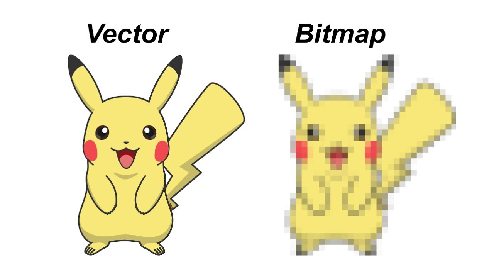

Een bitmap afbeeling is een afbeelding die veel ruimte in
beslag neemt en is opgebouwd uit pixels die je duidelijk ziet wanneer je inzoomd.
Hoe meer pixels je in een afbeelding wilt hebben hoe meer ruimte het in beslag neemt.
Met vectorafbeeldingen slaan de vormen van de afbeeldingen op
in plaats van de pixels, hierdoor blijft er meer opslagruimte over. Bij
vectorafbeeldingen komen onscherpe afbeeldingen niet voor. Het nadeel is dat vector
alleen maar vormen kan vastleggen, waardoor het niet bruikbaar is met digitale fotos,
omdat die uit kleurtinten bestaan en niet vormen.
Geluid opslaan doe je door het te sampelen. Sampelen is het proces van bijvoorbeeld
in een microfoon te praten, de trillingen in de lucht om te zetten naar een elektrisch
signaal en een computer kan dit daarna omzetten in digitale waarden.